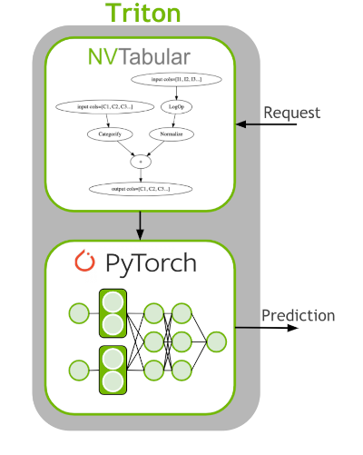

# Copyright 2021 NVIDIA Corporation. All Rights Reserved.
#
# Licensed under the Apache License, Version 2.0 (the "License");
# you may not use this file except in compliance with the License.
# You may obtain a copy of the License at
#
# http://www.apache.org/licenses/LICENSE-2.0
#
# Unless required by applicable law or agreed to in writing, software
# distributed under the License is distributed on an "AS IS" BASIS,
# WITHOUT WARRANTIES OR CONDITIONS OF ANY KIND, either express or implied.
# See the License for the specific language governing permissions and
# limitations under the License.
# ==============================================================================
Triton for Recommender Systems
NVIDIA Triton Inference Server (TIS) simplifies the deployment of AI models at scale in production. The Triton Inference Server allows us to deploy and serve our model for inference. It supports a number of different machine learning frameworks such as TensorFlow and PyTorch.
The last step of machine learning (ML)/deep learning (DL) pipeline is to deploy the ETL workflow and saved model to production. In the production setting, we want to transform the input data as done during training (ETL). We need to apply the same mean/std for continuous features and use the same categorical mapping to convert the categories to continuous integer before we use the DL model for a prediction. Therefore, we deploy the NVTabular workflow with the PyTorch model as an ensemble model to Triton Inference. The ensemble model guarantees that the same transformation is applied to the raw inputs.

Objectives:
Learn how to deploy a model to Triton
Deploy saved NVTabular and PyTorch models to Triton Inference Server
Sent requests for predictions
Pull and start Inference docker container
At this point, before connecing to the Triton Server, we launch the inference docker container and then load the exported ensemble t4r_pytorch to the inference server. This is done with the scripts below:
Launch the docker container:
docker run -it --gpus device=0 -p 8000:8000 -p 8001:8001 -p 8002:8002 -v <path_to_saved_models>:/workspace/models/ nvcr.io/nvidia/merlin/merlin-inference:21.09
This script will mount your local model-repository folder that includes your saved models from the previous cell to /workspace/models directory in the merlin-inference docker container.
Start triton server
After you started the merlin-inference container, you can start triton server with the command below. You need to provide correct path of the models folder.
tritonserver --model-repository=<path_to_models> --model-control-mode=explicit
Note: The model-repository path for our example is /workspace/models. The models haven’t been loaded, yet. Below, we will request the Triton server to load the saved ensemble model.
1. Deploy PyTorch and NVTabular Model to Triton Inference Server
Our Triton server has already been launched and is ready to make requests. Remember we already exported the saved PyTorch model in the previous notebook, and generated the config files for Triton Inference Server.
# Import dependencies
import os
from time import time
import argparse
import numpy as np
import pandas as pd
import sys
import cudf
1.2 Review exported files
Triton expects a specific directory structure for our models as the following format:
<model-name>/
[config.pbtxt]
<version-name>/
[model.savedmodel]/
<pytorch_saved_model_files>/
...
Let’s check out our model repository layout. You can install tree library with apt-get install tree, and then run !tree /workspace/models/ to print out the model repository layout as below:
├── t4r_pytorch
│ ├── 1
│ └── config.pbtxt
├── t4r_pytorch_nvt
│ ├── 1
│ │ ├── model.py
│ │ ├── __pycache__
│ │ │ └── model.cpython-38.pyc
│ │ └── workflow
│ │ ├── categories
│ │ │ ├── cat_stats.category_id.parquet
│ │ │ ├── unique.brand.parquet
│ │ │ ├── unique.category_code.parquet
│ │ │ ├── unique.category_id.parquet
│ │ │ ├── unique.event_type.parquet
│ │ │ ├── unique.product_id.parquet
│ │ │ ├── unique.user_id.parquet
│ │ │ └── unique.user_session.parquet
│ │ ├── metadata.json
│ │ └── workflow.pkl
│ └── config.pbtxt
└── t4r_pytorch_pt
├── 1
│ ├── model_info.json
│ ├── model.pkl
│ ├── model.pth
│ ├── model.py
│ └── __pycache__
│ └── model.cpython-38.pyc
└── config.pbtxt
Triton needs a config file to understand how to interpret the model. Let’s look at the generated config file. It defines the input columns with datatype and dimensions and the output layer. Manually creating this config file can be complicated and NVTabular generates it with the export_pytorch_ensemble() function, which we used in the previous notebook.
The config file needs the following information:
name: The name of our model. Must be the same name as the parent folder.platform: The type of framework serving the model.input: The input our model expects.name: Should correspond with the model input name.data_type: Should correspond to the input’s data type.dims: The dimensions of the request for the input. For models that support input and output tensors with variable-size dimensions, those dimensions can be listed as -1 in the input and output configuration.
output: The output parameters of our model.name: Should correspond with the model output name.data_type: Should correspond to the output’s data type.dims: The dimensions of the output.
1.3. Loading Model
Next, let’s build a client to connect to our server. The InferenceServerClient object is what we’ll be using to talk to Triton.
import tritonhttpclient
try:
triton_client = tritonhttpclient.InferenceServerClient(url="localhost:8000", verbose=True)
print("client created.")
except Exception as e:
print("channel creation failed: " + str(e))
triton_client.is_server_live()
client created.
GET /v2/health/live, headers None
<HTTPSocketPoolResponse status=200 headers={'content-length': '0', 'content-type': 'text/plain'}>
True
triton_client.get_model_repository_index()
POST /v2/repository/index, headers None
<HTTPSocketPoolResponse status=200 headers={'content-type': 'application/json', 'content-length': '201'}>
bytearray(b'[{"name":"t4r_pytorch","version":"1","state":"UNAVAILABLE","reason":"unloaded"},{"name":"t4r_pytorch_nvt","version":"1","state":"UNLOADING"},{"name":"t4r_pytorch_pt","version":"1","state":"UNLOADING"}]')
[{'name': 't4r_pytorch',
'version': '1',
'state': 'UNAVAILABLE',
'reason': 'unloaded'},
{'name': 't4r_pytorch_nvt', 'version': '1', 'state': 'UNLOADING'},
{'name': 't4r_pytorch_pt', 'version': '1', 'state': 'UNLOADING'}]
We load the ensemble model
model_name = "t4r_pytorch"
triton_client.load_model(model_name=model_name)
POST /v2/repository/models/t4r_pytorch/load, headers None
<HTTPSocketPoolResponse status=200 headers={'content-type': 'application/json', 'content-length': '0'}>
Loaded model 't4r_pytorch'
If all models are loaded successfully, you should be seeing successfully loaded status next to each model name on your terminal.
2. Sent Requests for Predictions
Load raw data for inference: We select the first 50 interactions and filter out sessions with less than 2 interactions. For this tutorial, just as an example we use the Oct-2019 dataset that we used for model training.
INPUT_DATA_DIR = os.environ.get("INPUT_DATA_DIR", "/workspace/data/")
df= cudf.read_parquet(os.path.join(INPUT_DATA_DIR, 'Oct-2019.parquet'))
df=df.sort_values('event_time_ts')
batch = df.iloc[:50,:]
sessions_to_use = batch.user_session.value_counts()
filtered_batch = batch[batch.user_session.isin(sessions_to_use[sessions_to_use.values>1].index.values)]
filtered_batch.head()
| user_session | event_type | product_id | category_id | category_code | brand | price | user_id | event_time_ts | prod_first_event_time_ts | |
|---|---|---|---|---|---|---|---|---|---|---|
| 3562914 | 1637332 | view | 1307067 | 2053013558920217191 | computers.notebook | lenovo | 251.74 | 550050854 | 1569888001 | 1569888001 |
| 5173328 | 4202155 | view | 1004237 | 2053013555631882655 | electronics.smartphone | apple | 1081.98 | 535871217 | 1569888004 | 1569888004 |
| 3741261 | 1808164 | view | 1480613 | 2053013561092866779 | computers.desktop | pulser | 908.62 | 512742880 | 1569888005 | 1569888005 |
| 4996937 | 3794756 | view | 31500053 | 2053013558031024687 | <NA> | luminarc | 41.16 | 550978835 | 1569888008 | 1569888008 |
| 5589259 | 5470852 | view | 28719074 | 2053013565480109009 | apparel.shoes.keds | baden | 102.71 | 520571932 | 1569888010 | 1569888010 |
import warnings
warnings.filterwarnings("ignore")
import nvtabular.inference.triton as nvt_triton
import tritonclient.grpc as grpcclient
inputs = nvt_triton.convert_df_to_triton_input(filtered_batch.columns, filtered_batch, grpcclient.InferInput)
output_names = ["output"]
outputs = []
for col in output_names:
outputs.append(grpcclient.InferRequestedOutput(col))
MODEL_NAME_NVT = "t4r_pytorch"
with grpcclient.InferenceServerClient("localhost:8001") as client:
response = client.infer(MODEL_NAME_NVT, inputs)
print(col, ':\n', response.as_numpy(col))
output :
[[-12.86381 -13.449438 -9.572359 ... -12.689846 -13.033402
-13.294905 ]
[-24.320768 -26.130745 -4.3342614 ... -24.07727 -25.470228
-26.27378 ]
[-22.867298 -24.897617 -6.6269407 ... -23.640343 -23.620872
-24.977371 ]
[-21.455946 -22.92965 -4.8912797 ... -21.020473 -22.514032
-22.958193 ]
[-24.569319 -26.149971 -4.223791 ... -24.316437 -25.649946
-26.920403 ]
[-14.218529 -14.833358 -8.438756 ... -14.013732 -14.700138
-14.71361 ]]
Visualise top-k predictions
from transformers4rec.torch.utils.examples_utils import visualize_response
visualize_response(filtered_batch, response, top_k=5, session_col='user_session')
- Top-5 predictions for session `1167651`: 1045 || 229 || 233 || 1085 || 10
- Top-5 predictions for session `1637332`: 11 || 7 || 4 || 2 || 3
- Top-5 predictions for session `1808164`: 162 || 142 || 226 || 80 || 200
- Top-5 predictions for session `3794756`: 3 || 2 || 26 || 364 || 10
- Top-5 predictions for session `4202155`: 2 || 57 || 36 || 38 || 10
- Top-5 predictions for session `5470852`: 1710 || 233 || 805 || 555 || 10
As you see we first got prediction results (logits) from the trained model head, and then by using a handy util function visualize_response we extracted top-k encoded item-ids from logits. Basically, we generated recommended items for a given session.
This is the end of the tutorial. You successfully …
performed feature engineering with NVTabular
trained transformer architecture based session-based recommendation models with Transformers4Rec
deployed a trained model to Triton Inference Server, sent request and got responses from the server.
Unload models and shut down the kernel
triton_client.unload_model(model_name="t4r_pytorch")
triton_client.unload_model(model_name="t4r_pytorch_nvt")
triton_client.unload_model(model_name="t4r_pytorch_pt")
POST /v2/repository/models/t4r_pytorch/unload, headers None
{"parameters":{"unload_dependents":false}}
<HTTPSocketPoolResponse status=200 headers={'content-type': 'application/json', 'content-length': '0'}>
Loaded model 't4r_pytorch'
POST /v2/repository/models/t4r_pytorch_nvt/unload, headers None
{"parameters":{"unload_dependents":false}}
<HTTPSocketPoolResponse status=200 headers={'content-type': 'application/json', 'content-length': '0'}>
Loaded model 't4r_pytorch_nvt'
POST /v2/repository/models/t4r_pytorch_pt/unload, headers None
{"parameters":{"unload_dependents":false}}
<HTTPSocketPoolResponse status=200 headers={'content-type': 'application/json', 'content-length': '0'}>
Loaded model 't4r_pytorch_pt'
import IPython
app = IPython.Application.instance()
app.kernel.do_shutdown(True)
{'status': 'ok', 'restart': True}